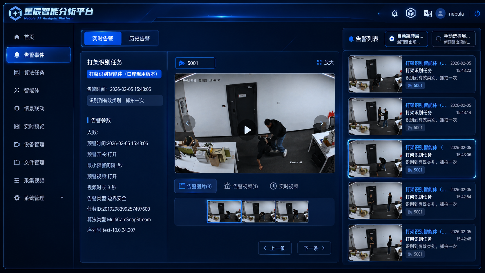

空间智能体
物理空间的运营大脑
以空间世界模型为内核，让每一座空间都拥有一个会感知、会决策、会进化的智能体——把口岸、地铁、园区等泛公共空间，从被动监控对象升级为主动管理资产
值得信赖的行业 AI 赋能专家
百亿平米存量空间，正在加速 AI 化
从“增量开发”进入“存量运营”，效率重构需求强烈——而 90% 的视频从未被真正“看过”
跑断腿，效率低
- 巡检占基层员工 30%–60% 工作量
- 80% 时间花在巡查路上
- 重复巡查、效能不可控
看花眼，看不住
- 单人需同时盯 600+ 路视频
- 专注力仅能维持 20 分钟
- 传统模型只“看到像素”读不懂语义
反应慢，管不全
- 信息多层传递衰减率达 40%
- 事后倒查耗费 10+ 人工时
- 发现—派单—处置链条割裂
三大黑洞的共同根源，是空间运营缺少一个看得懂、管得动的大脑 —— 把这个大脑补上，正是空间智能体要解决的问题
从交付工具，到交付运营结果
这是行业正在发生的演进方向，也是北斗持续投入的目标，我们同时提供项目交付与智能体订阅两种形态，让能力随客户阶段平滑升级
空间智能体 = 部署在物理空间中，能持续感知、自主推理、独立决策、闭环执行，并不断记忆与进化的 AI 系统
不交付工具，交付一个会自运转的空间智能体
一套以世界模型为内核、感知—推理—决策—执行—记忆—进化六环闭环的智能体，
落地为可订阅、可复制的 AI 员工
AI 安全管家
自动识别安全、秩序、品质与设备异常，
主动式巡防

AI 设备管家
12 类设备机房 7×24 在线监测
与全生命周期管理

AI 调度员
事件分级—自动派单—物料分拨
作业指引—评价闭环

AI 节能专家
冷站负荷预测与供需响应，制冷系统智能调优

AI 客服管家
7×24 人机协同，知识库问答与自助办理

AI 项目经理
运营数据汇总、进度跟踪、超时预警与决策辅助

让“硬科技”可感知
规模
成效
科创
为每个行业提供
可落地的主动式 AI 服务
四大行业，按场景对号入座
真实场景，真实成效
深圳地铁公共安全智能巡防标杆
全国首个结合大小模型的公共场所智能视频巡，秒级监测异常，主动感知止于未发
国家级科研牵引的
口岸双提升标杆
牵头科技部国家重点研发计划，已在深圳六大口岸部署，高峰通关效率提升 40%
承接广东交通集团 AI+
三年行动计划
聚焦路网管控、安全应急、低空智化，惠盐高速空地协同巡检验证落地
赋能华润、招商局头部物企
“科研能力—工程平台—物业场景”转化闭环，AI 覆盖巡查业务 40%、提效 66%
枢纽出行服务平台
掌握运力匹配情况，提升综合交通枢纽的客流运输效率与服务水平
推动人工智能原创成果转化
 清华大学
清华大学 华中科技大学
华中科技大学 同济大学
同济大学 深圳大学
深圳大学 公安部第一研究所
公安部第一研究所 中国检验检疫
中国检验检疫科学研究院
 中国疾病预防控制中心
中国疾病预防控制中心 深圳市交通运输局
深圳市交通运输局 国家信息中心
国家信息中心 中国测绘科学研究院
中国测绘科学研究院 交通运输部
交通运输部公路科学研究院
 中国人民解放军军事
中国人民解放军军事科学院防化研究院
 国家卫生健康委
国家卫生健康委卫生发展研究中心
 深圳市规划国土发展
深圳市规划国土发展研究中心
把空间运营，交给 AI 员工团队
已服务 3000+ 空间，与我们聊聊，看看空间智能体如何在你的场景里 7×24 在岗
空间智能体
物理空间的运营大脑
不是又一套管理软件的升级，也不是若干视频算法的叠加，而是面向物理空间运营的智能系统——让运营能力不再绑定于具体的人，而是沉淀进一个可感知、可认知、可决策、可执行、可持续学习的系统之中
面向物理空间运营的智能系统，能够基于视频、传感器、设备与业务系统等多源数据，完成对空间状态的感知、对事件风险的认知、对处置任务的决策、对执行资源的调度，并在持续运行中不断学习优化——推动空间从被动管理走向主动运营，乃至自治演化
前者理解像素，后者理解空间——这是空间智能体区别于一切“视频 AI / 安防大模型”的分水岭
感知 → 推理 → 决策
执行 → 记忆 → 进化
空间智能体不是“看见问题”的系统，而是六环闭环的运营系统，
感知与执行是行业入场券，推理、决策、记忆、进化才是真正的护城河
空间智能体：
物理空间的操作系统
就像 Windows 之于电脑、Android 之于手机，空间智能体把一座空间里异构的感知设备、子系统、执行终端抽象为统一的能力接口，以空间世界模型为内核，把过去彼此割裂的视频、物联、机器人、业务系统与其他 AI 智能体，重新组织进同一个可编排、可调度、可迭代的体系
护城河不在底层算力，而在其上层：空间世界模型（认知内核）+ 权限、任务、工作流、资源、执行五大体系
六层能力底座 + 一个飞轮
从“看得见”到“越用越强”，六层能力支撑空间运营
多模态空间感知
让空间“看得见”——把摄像头、传感器、门禁、电梯、消防、业务系统等多源数据，融合进同一个时空坐标系（原星辰·视觉感知）
空间世界模型
从“理解画面”到“理解空间”——空间的拓扑、状态、规则与目标，这是最深的技术护城河
时空事件理解
从“一帧画面”到“一条事件链”——理解事件的起因、演进与后果，而非孤立的瞬间报警
空间运营知识体系
4000+ 行业 SOP 结构化沉淀，
让决策有据可依，而非黑箱臆断
空间运营智能体系统
目标驱动而非角色驱动的多智能体协同，统一管理多个 AI 员工（原星瀚·决策智能）
执行网络
让空间“动得了手”——联动设备、派发工单，乃至调度巡检机器人、无人机完成现场处置
执行边界：把“自主”讲成成熟度，而非风险
空间智能体到底能执行什么、哪些必须人确认——按风险等级分级管理，低风险自动闭环以释放效率，高风险始终把最终决定权留给人
| 执行等级 | 动作类型 | 示例 | 是否需人确认 |
|---|---|---|---|
| L1 | 提醒 | APP 推送、短信、广播建议 | 否 |
| L2 | 派发 | 自动派单、任务分配 | 部分需要 |
| L3 | 联动 | 灯光、新风、空调参数 | 规则内自动 |
| L4 | 强联动 | 门禁限制、疏散广播 | 需要确认 |
| L5 | 高风险处置 | 消防、应急封控 | 必须人确认 |
云边协同算力底座 · 磐石
云边协同的高性价比国产算力底座，支撑空间智能能力可部署、可运维、可复制、低成本规模化落地
- 自主可控：芯片、操作系统到数据库中间件全国产化，
已与统信操作系统完成互认证 - 边云协同：大小模型分级过滤，落地成本降低 80%、算力占用降至 67%，
响应时延 ≤1 秒 - 弹性扩展：从单点监控到区域级数据中心的弹性算力需求
产品系列
| 系列 | 定位 |
|---|---|
| 磐石 H 系列 | 鸿蒙物联型 |
| 磐石 E 系列 | 国产边缘算力 |
| 磐石 L 系列 | 大模型一体机 |
| 磐石 H（节能版） | 节能型一体机 |
| 算力 | 2TOPS – 211TOPS |
| 接入 | 60 – 300 路 / 10 张图每秒 |

空间感知 · 星辰
空间智能体的感知层，破解传统视频监控
“看不全、看不懂、看不准”三大根本局限
- 看不全 → 跨镜时空融合：跨镜追踪识别率 90%、定位准确率 95%，ReID 多数据集排名第一
- 看不准 → 客流识别：平峰 98%、高峰 90%
- 看不懂 → 多模态理解：读懂场景语义，而非仅“看到像素”
- 持续进化：模型蒸馏+剪枝，计算效率提升 200%，RLHF 下准确率 +20%
算法场景库
沉淀面向 10 类物理空间、56 个业务子类、800+ 行业算法场景
空间运营智能体系统 · 星瀚
空间智能体的决策层，以知识库驱动、多智能体目标协同为核心，让系统从“看见事件”走向“研判风险、拆解任务、推动闭环”
- 五大能力：SOP 解析 / 知识图谱 / 事件研判 / 工单分拨 / 复盘归因
- 决策闭环：风险判断 → 任务分拨 → 处置建议，RAG 知识库实时提供作业指引
- 业务壁垒：沉淀 4000+ SOP、29 万条多模态事件标签，RLHF 持续进化
人机协同模式
AI 侧
- 多模态感知
- 情景解析与意图理解
- 自动调度与策略生成
人侧
- 现场处置
- 高情商客户沟通
- 例外情境判断
同一个智能体内核，封装成不同岗位的 AI 员工
AI 员工不是六个相互独立的产品，而是同一套空间智能体闭环能力（感知·推理·决策·执行），
通过技能库与岗位配置，封装成不同岗位上的角色，一个内核，不同岗位，按“岗位 × 空间”订阅计费
AI 安全管家
风险发现、事件预警与安全闭环
AI 设备管家
设备巡检、故障发现与工单联动
AI 调度员
任务分派、资源调度与处置协同
AI 节能专家
能耗分析、策略优化与节能执行
AI 项目经理
项目运行洞察、计划跟踪与复盘优化
AI 客服管家
服务响应、咨询分流与体验提升
同一个空间智能体，服务四大行业 · 十二类场景
四大行业、十二个细分场景，按场景对号入座，每个方案，是空间智能体在该场景下派出的一组 AI 员工，配本行业的标杆案例与可量化成效
智慧交通
含 3 个细分场景：轨道交通、交通枢纽、高速·低空，每个场景配对应的 AI 员工组合与标杆成效
进入行业 →公共安全
含 2 个细分场景：轨道公安、口岸边检，
每个场景配对应的 AI 员工组合与标杆成效
智慧园区物业
含 4 个细分场景：住宅物业、商业物业、写字楼、产业园区，每个场景配对应的 AI 员工组合与标杆成效
进入行业 →公共服务
含 3 个细分场景：机关单位、医院、学校，
每个场景配对应的 AI 员工组合与标杆成效
标杆客户
不是案例堆砌，而是同一套能力在标杆场景中被规模化复制的证明
集团级空间智能中台
全国首个物业管理大模型平台
市占率 25%
更多标杆客户案例可在商务沟通中按行业场景提供
智慧交通 · 按场景对号入座
空间智能体在 智慧交通 的各个细分场景下，派出对应的 AI 员工组合，选择你的场景，查看具体方案与标杆成效
轨道交通
高密度封闭客流，毫秒级越线预警，让车站从被动监控走向主动调度
查看方案 →交通枢纽
多源数据分散、调度难统一，把数十个子系统汇成一幅统一空间实况
查看方案 →高速·低空
路网跨度长、点位分散，空地协同，无人机+边缘+云端闭环
查看方案 →公共安全 · 按场景对号入座
空间智能体在 公共安全 的各个细分场景下，派出对应的 AI 员工组合，选择你的场景，查看具体方案与标杆成效
轨道公安
立体安防落地 14 城，市占率 25%，让海量视频转化为战斗力
查看方案 →口岸边检
国家级重点研发，主动发现率 98%、通关提效 40%
查看方案 →智慧园区物业 · 按场景对号入座
空间智能体在 智慧园区物业 的各个细分场景下，派出对应的 AI 员工组合，选择你的场景，查看具体方案与标杆成效
住宅物业
用算法密度替代人力密度，让一个运营者服务更多社区
查看方案 →商业物业
多业态、高品质要求，世界模型有人付钱、且有实效
查看方案 →写字楼
设备机房 7×24 监测，能耗智能调优
查看方案 →产业园区
多业态跨地域，集团级中台一次共建、多空间复用
查看方案 →公共服务 · 按场景对号入座
空间智能体在 公共服务 的各个细分场景下，派出对应的 AI 员工组合，选择你的场景，查看具体方案与标杆成效
机关单位
有温度、善管控的智慧机关大脑
查看方案 →医院
强化消防感知与安全防控，保障院区运行安全
查看方案 →学校
校园安全与秩序智能巡防，有效警情可追溯
查看方案 →高密度封闭空间的主动安全运营
地铁车站客流密集、空间封闭、风险瞬时——空间智能体在边缘毫秒级识别越线、滞留、聚集等异常，把事件止于未发
场景挑战
- 高峰客流密集，人工盯屏难及时
- 封闭空间风险瞬时、处置窗口短
- 多站点统一态势难建立
方案优势
- 边缘一体机毫秒级越线预警
- 异常行为/滞留/聚集自动监测告警
- 多站点统一态势感知与智能编排
深圳地铁智慧车站
结合大小模型的智能视频巡查，有效告警率提升 70%，单城部署 500+ 座地铁站
多源数据统一态势感知
枢纽接入数十个子系统、数万设备终端，数据各说各话——空间智能体把它们融合进同一个时空坐标系，形成统一运营实况
场景挑战
- 多源数据分散，子系统各自为政
- 调度难统一，跨部门协同链条长
- 大客流时段应急响应压力大
方案优势
- 多源数据融合进统一时空坐标系
- 跨模态设备协同与智能编排
- 大客流预测与应急资源调度
大型综合枢纽 · 全量接入
覆盖多类工程、数十个子系统、数万台设备终端，形成统一空间运营实况
长跨度路网的空地协同巡检
高速路网跨度长、点位分散，传统巡检与无人机缺少协同——空间智能体把无人机巡检、边缘识别与云端研判连成一条闭环
场景挑战
- 路网跨度长、点位分散
- 传统人工巡检效率低、覆盖不全
- 无人机与地面系统缺少协同
方案优势
- 空地协同：无人机巡检+边缘识别+云端研判闭环
- 事件自动识别与分级派发
- 承接省级 AI+ 交通行动计划
广东交通集团 AI+ / 惠盐高速
承接广东交通集团 AI+ 三年行动计划，惠盐高速空地协同巡检落地
从被动监控到主动研判处置
超大客流、多站点、突发性强——空间智能体主动感知，事件止于未发，算法包+SOP 跨场景可复制，已在全国 14 城落地
场景挑战
- 超大客流+多站点，人工盯屏难及时
- 突发性强、处置链条长
- 海量视频多用于事后回看
方案优势
- 主动感知，事件止于未发
- 新任务提效显著
- 算法包+SOP 跨城快速复制
地铁公安立体安防平台
立体安防防控平台落地全国 14 城，市占率约 25%，单城部署地铁站 500+ 座
高安全场景的主动发现与提效
口岸安全责任刚性、通关效率要求高——空间智能体牵头国家级重点研发计划，突发事件主动发现率提升 98%、高峰通关效率提升 40%
场景挑战
- 安全责任刚性、零延迟要求
- 通关高峰效率压力大
- 海量视频靠人盯防做不到全覆盖
方案优势
- 突发事件主动发现率显著提升
- 高峰通关效率大幅优化
- 参与起草口岸边检信息化建设标准
深圳口岸 · 国家重点研发计划
牵头科技部国家重点研发计划，突发事件主动发现率提升 98%、高峰通关效率提升 40%
社区运营的算法密度替代
住宅物业人力占比高、巡查重复——空间智能体把巡检、安全、设备等低价值劳动交给 AI 员工，让运营者聚焦高价值服务
场景挑战
- 巡查占基层 30%–60% 工作量
- 人力成本上行、招工难
- 品质管控标准难统一
方案优势
- AI 覆盖巡查业务，提效显著
- 多岗位 AI 员工协同
- 多项目可复制推广
华润万象生活 · 社区场景
全国首个物业管理大模型平台在住宅社区落地，AI 覆盖巡查 40%、提效 66%
高端商业空间的标准化智能运营
商业综合体业态多、品质要求严——空间智能体把巡查、安全、运营标准化，沉淀为可跨项目复制的能力平台
场景挑战
- 管理大量高端商业空间
- 人力运营成本高、品质要求严
- 需要把巡查/安全/运营标准化
方案优势
- 以平台为底座向大量项目规模化复制
- 巡查这一最大人力黑洞被显著压缩
- 世界模型有人付钱、且确有实效
华润万象生活 · 商业物业
全国首个物业管理大模型平台，1536 个项目规模化复制，证明它不是定制项目而是平台产品
办公空间的设备与能效优化
写字楼设备机房多、能耗占比高——空间智能体提供设备全生命周期监测与冷站智能调优，让运营更省、更稳
场景挑战
- 12 类设备机房需 7×24 监测
- 能耗占运营成本高
- 设备故障发现与处置链条长
方案优势
- 设备全生命周期在线监测
- 冷站负荷预测与供需响应调优
- 故障自动发现与工单联动
甲级写字楼 · 设备与能效
12 类设备机房 7×24 监测与全生命周期管理，能耗降低 10%–15%
集团级园区的中台化复用
产业园区多业态、跨地域、资产分散——空间智能体以集团级中台沉淀分散能力，一次共建、多空间复用
场景挑战
- 多业态、跨地域资产分散
- 运营标准难统一、经验难沉淀
- 分散能力难以集团化沉淀
方案优势
- 集团级空间智能中台
- 一次共建、多空间复用
- 隐患排查与风险分级效率显著提升
招商局集团 · 集团级中台
集团级空间智能中台覆盖 626 空间、9 家二级公司，一次共建、多空间复用
政务空间的智慧机关大脑
机关单位多环节资源需统筹——空间智能体提供有温度、善管控的智慧治理，统筹安全、设备与服务多环节
场景挑战
- 多环节资源需统筹
- 安全与服务并重
- 管理标准难统一
方案优势
- 有温度、善管控的智慧机关
- 多环节资源统筹调度
- 机关大脑统一运营视图
深圳市机关事务管理局
机关大脑统一运营平台，统筹安全、设备与服务多环节
医疗院区的安全防控体系
医院消防与安全防控压力大、人员密集——空间智能体构建多维预警防控体系，保障院区运行安全
场景挑战
- 消防与安全防控压力大
- 人员密集、流动性高
- 重点区域需 7×24 监测
方案优势
- 强化消防感知与安全防控
- 多维预警防控体系
- 重点区域主动巡防
医院 · 多维预警防控
医院多维预警防控体系，强化消防感知与安全防控，保障院区运行安全
校园空间的安全秩序巡防
学校人员密集、安全与秩序管理要求高——空间智能体提供校园安全与秩序智能巡防，主动发现、闭环处置
场景挑战
- 人员密集、安全要求高
- 秩序管理压力大
- 事件响应需及时
方案优势
- 校园安全与秩序智能巡防
- 有效警情主动发现
- 响应时间显著缩短
校园安全 · 智能巡防
校园安全与秩序智能巡防，有效警情 1275 起，准确率 92%，响应时间缩短 70%
支撑规模化复制的六层能力底座
从“看得见”到“越用越强”，六层能力在技术上支撑空间运营，
感知与执行是行业入场券，世界模型、事件理解、知识体系、智能体系统是真正的护城河
回到空间智能体总览 →
六层能力底座 · 点击展开每一层
每一层都对应一项可展开的核心技术，它们不是孤立能力，而是“感知—理解—决策—执行”的连续壁垒
多模态空间感知
把摄像头、传感器、门禁、电梯、消防、业务系统等多源数据，
融合进同一个时空坐标系
空间世界模型
空间智能体对其所运营空间的动态、结构化内在表征——拓扑、状态、规则、目标，这是最深的技术护城河
展开技术 →时空事件理解
把连续的时空数据读成一条有因果、有前后的事件链，
理解事件的起因、演进与后果
空间运营知识体系
标准作业流程、管理规则、历史案例、专家经验、行业标准，共同沉淀为空间“懂得如何运营”的知识底座
展开技术 →空间运营智能体系统
不是“单一智能体”，而是面向空间运营目标的智能体系统——
目标驱动而非角色驱动
执行网络
空间智能体伸向物理世界的“手脚”——把决策转化为真实动作，
统合设备、机器人、无人机
＋ 空间运营飞轮：
让底座越用越强
运营的空间越多，捕捉的事件越多；事件越多，知识越厚；知识越厚，智能体越聪明
每一次真实处置的全过程——感知数据、事件判定、决策依据、执行结果、人工校正——都被沉淀回系统，让整个底座越用越强
科创实力
科研项目
- 国家级项目 5 项
- 省级项目 2 项
- 市级重大专项 5 项
- 区级项目 1 项
科技奖项
- 广东省技术发明奖二等奖
- 地理信息科技进步一等奖
- 深圳市科技进步奖 2 项
- 德国红点奖等国际设计奖 3 项
资质与背书
多模态空间感知
让空间“看得见”
一切始于感知，空间智能体的第一层能力，是把一座空间的真实状态转化为机器可处理的数据，传统安防是“点”的感知——一个摄像头看一个画面；空间智能体要的是“场”的感知——多源数据融合进同一个时空坐标系，共同描绘整座空间此刻正在发生什么
技术要点
- 多源异构融合：摄像头、传感器、门禁、电梯、空调、消防、业务系统融合进统一时空坐标系
- 跨镜时空 ReID：跨镜追踪识别率 90%、定位准确率 95%，公开数据集排名第一
- 复杂场景识别：面向开放、动态、充满例外的真实空间，高精度高鲁棒
- 结构化输出：把原始视频/传感数据，转化为结构化的空间实况
感知是底座的底座——它的密度与质量，决定了上层一切认知与决策的天花板
空间世界模型
从“理解画面”到“理解空间”
这是能力底座中最具区分度的一层，视频 AI 看到的是“画面里有一个人”；具备空间世界模型的系统知道——这个人在哪个区域、为什么出现、影响了什么、接下来可能引发什么风险，前者理解像素，后者理解空间
技术要点
- 空间拓扑：道路、楼层、区域、出入口及其连接关系——知道“这里是哪、通向何方”
- 空间状态：各区域当前拥堵还是空闲、正常还是异常——知道“此刻怎么样”
- 空间规则：消防规则、作业规范、安全红线——知道“什么可以、什么不可以”
- 空间目标：安全、效率、节能、体验——知道“为何而运营”
一条孤立的感知信息，只有被放回空间世界模型的全局中，才从“现象”变为“后果”，从“看见”变为“看懂”
时空事件理解
从“一帧画面”到“一条事件链”
有了空间世界模型作底，认知能力才得以展开，传统视频分析是“切片式”的——发现烟雾报警、发现徘徊报警，处理一个个孤立瞬间，时空事件理解是“链条式”的——把“进入受限区域—违规作业—出现烟雾—设备报警—人员疏散”识别为同一条完整事件链
技术要点
- 事件链建模：把孤立瞬间串成有因果、有前后的完整事件
- 长时序因果：理解事件的起因、演进与后果，而非单帧识别
- 事前预警：从“此刻有什么”到“接下来会怎样”
- 多模态标签：29 万条多模态事件标签沉淀
它让空间智能体不再是被动的报警器，而成为能读懂空间叙事的理解者——这是后续一切决策的前提
空间运营知识体系
让决策有据可依
理解了“发生了什么”，还要回答“该怎么办”，决策不能凭空产生，它需要一套可依据的知识，当一条事件链被识别，系统在知识网络中检索匹配的处置规则与历史经验，决策便有据可依，而非黑箱臆断
技术要点
- SOP 知识资产：4000+ 行业 SOP 结构化沉淀
- 实战数据资产：8 万条有效工单
- 规则与案例：管理规则、历史案例、规章制度、专家经验、行业标准
- 难以复制：时间与场景的函数，算法可开源、算力可购买，知识无法速成
这层知识体系，恰恰是空间智能体最难被复制的资产之一——它与数据飞轮、与真护城河，是同一件事的不同侧面
空间运营智能体系统
目标驱动的多智能体协同
感知、世界模型、事件理解、知识体系，最终要由“智能体”把它们调动起来，完成从理解到决策的闭环，但要破除一个浅层理解：空间智能体不是“单一智能体”，而是一个面向空间运营目标的智能体系统
技术要点
- 目标驱动：AI 员工们共同服务于同一组运营目标（安全/效率/低碳/体验），而非各管一摊
- 动态协同：围绕目标动态协同、相互调度，而非角色驱动的简单分工
- 多目标权衡：在彼此牵制的目标间做动态博弈与权衡
- 统一管理：统一管理多个 AI 员工的运营系统
角色是表象，目标是内核；让一群智能体围绕统一目标协同运转的那套机制，才是这一层的本质
执行网络
让空间“动得了手”
看见、看懂、想明白仍属于数字世界，让空间真正“动得了手”，靠的是执行网络——联动门禁、调节空调照明、控制电梯广播、派发追踪工单，乃至调度巡检机器人、无人机完成现场处置，机器人是“身体”，空间智能体是“大脑”
技术要点
- 设备联动：门禁、空调、照明、电梯、广播、消防辅助
- 工单闭环：派发并追踪工单，处置在物理空间真实发生
- 机器人调度：统合巡检机器人、无人机、机械臂等执行端
- 权限分级：L1–L5 风险分级：低风险自动闭环，高风险人确认
空间智能体不与机器人争夺“身体”，而是承担指挥各类执行端的“大脑”，执行边界按 L1–L5 分级，高风险始终人确认
源自中科院先进院的空间智能体团队
十二年聚焦空间智能服务（2014 起），
致力于打造物理空间可感知、可决策、可执行的 AI 生产力
让 AI 贯穿数字与物理空间
给空间智慧，让城市平安
关于北斗
北斗院（深圳北斗应用技术研究院）是中科院深圳先进技术研究院于 2014 年创立的新型研发机构，是先进院数字化技术的应用创新与成果转化载体
北斗智能（深圳市北斗智能科技有限公司）成立于 2017 年，作为工程化与产业化的承接主体，两者关系是：研究院是技术源头，北斗智能把科研成果工程化、产品化落地
发展历程
北斗应用成立，构筑全国首个城市综合交通大数据平台
获中国智能交通协会科技一等奖；交通大数据平台评为广东省大数据应用示范项目
北斗智能成立
国家高新技术企业、广东省新型研发机构；全国首个城市大脑“智慧宝安中控平台”上线
北斗·星瀚 / 星辰发布，公共交通立体防控平台全国推广
两大系统斩获德国红点奖；获深圳市科技进步一等奖、广东省技术发明奖二等奖
行业多模态大模型与 AI 安全员上线
入选 2024 大湾区 AI 应用示范 TOP100、2025 REAL100 创新家；联合深理工共建空间智能实验室
联系我们
咨询热线
0755-86539692
企业邮箱
info@szbit.cn
公司地址
深圳市南山区创科路深圳国际创新谷
1 期 2 栋 A 座 22 楼